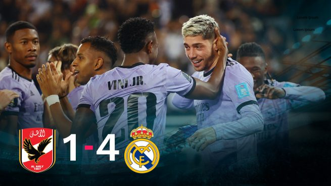

Vinicius y Rodrygo rescataron a un Real Madrid gris y le metieron en la final del Mundial de Clubes. Los dos brasileños lideraron el ataque de los blancos, bien secundados por Fede Valverde. Marcaron los tres de arriba del equipo de Ancelotti, muy superior al bullicioso Al-Ahly. El canterano Sergio Arribas, en la prolongación, hizo el definitivo 4-1.
